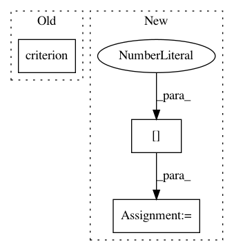

77a6ec73c53c5cc62a2ae451694537144afa5644,mnist/main.py,,test,#Any#,74
Before Change
print("Testing model: {}/{}".format(i, test_data.size(0)), end="\r")
batch_data.data[:] = test_data[i:i+TEST_BATCH_SIZE]
batch_targets.data[:] = test_labels[i:i+TEST_BATCH_SIZE]
test_loss += criterion(model(batch_data), batch_targets)
test_loss = test_loss.data[0]
test_loss /= (test_data.size(0) / TEST_BATCH_SIZE) // criterion averages over batch size
print("TEST SET RESULTS:" + " " * 20)
After Change
batch_targets.data[:] = test_labels[i:i+TEST_BATCH_SIZE]
output = model(batch_data)
test_loss += criterion(output, batch_targets)
pred = output.data.max(1)[1]
correct += pred.long().eq(batch_targets.data.long()).sum()
test_loss = test_loss.data[0]
test_loss /= (test_data.size(0) / TEST_BATCH_SIZE) // criterion averages over batch size
In pattern: SUPERPATTERN
Frequency: 4
Non-data size: 3
Instances
Project Name: OpenNMT/OpenNMT-py
Commit Name: 77a6ec73c53c5cc62a2ae451694537144afa5644
Time: 2016-09-14
Author: alerer@fb.com
File Name: mnist/main.py
Class Name:
Method Name: test
Project Name: pytorch/fairseq
Commit Name: 8bafae2ee7044529543768eec63d8460d894f5c6
Time: 2017-10-19
Author: myleott@fb.com
File Name: fairseq/multiprocessing_trainer.py
Class Name: MultiprocessingTrainer
Method Name: _async_train_step